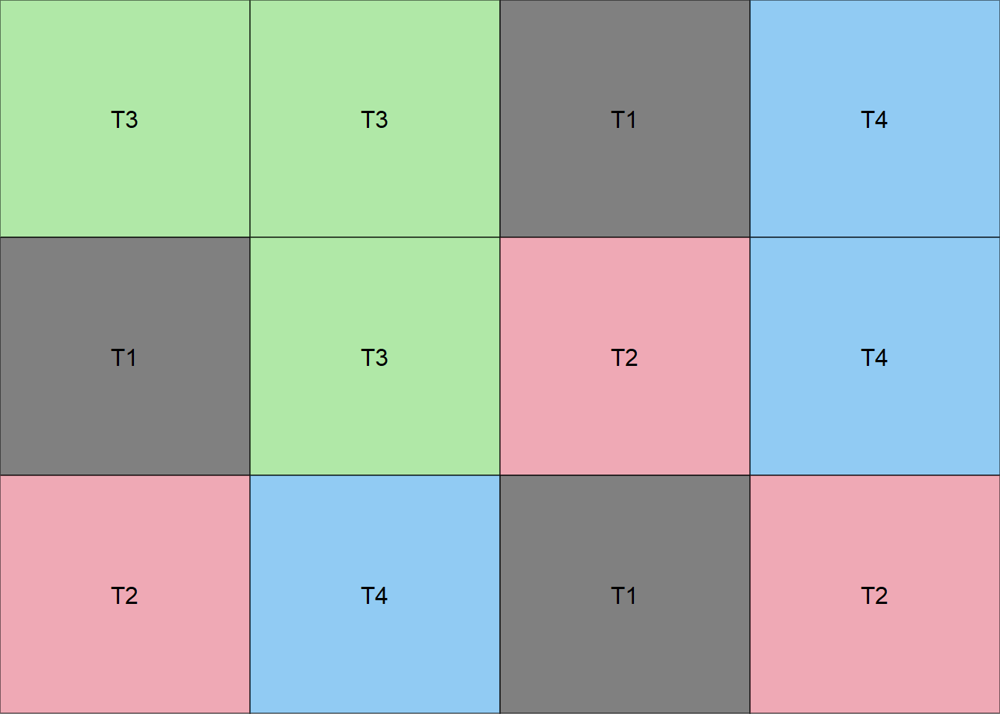
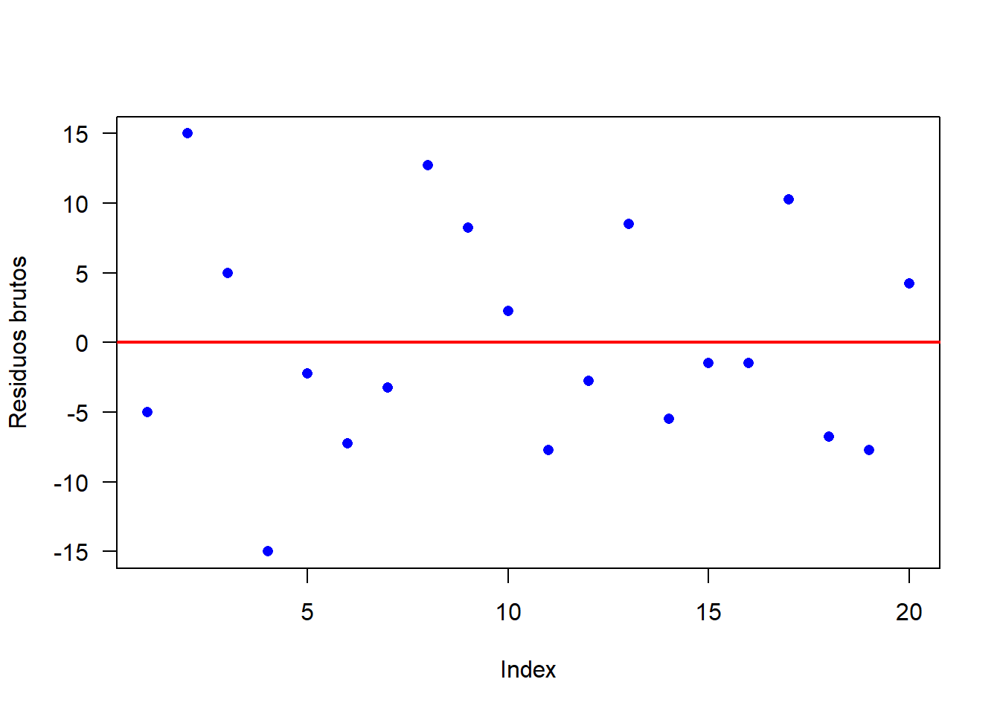

12 Delineamento Inteiramente Casualizado
O Delineamento inteiramente casualizado é considerado o delineamento mais simples dentro da estatistica. No DIC as unidades experimentais são destinadas a cada tratamento de uma forma inteiramente casual (sorteio). Os experimentos formulados com este delineamento são denominados “experimentos inteiramente ao acaso”.
O DIC apresenta as seguintes características:
- Considera apenas os princípios de repetição e casulização;
- Os tratamentos são divididos em parcelas de forma inteiramente casual;
- Exige que o material experimental seja semelhante e que as condições de estudo sejam completamentes uniformes;
- Os aspectos que devem ser considerados na semelhança entre as U.E. são aqueles que interferem nas respostas das mesmas aos tratamentos;
- Ele geralmente é mais utilizado em experimentos nos quais as condições experimentais podem ser bastante controladas (por exemplo em laboratórios);
12.1 Vantagens
Delineamento flexível - número de tratamentos e repetições depende apenas da quantidade de parcelas disponíveis
O número de repetições pode diferir de um tratamento para o outro (experimento não balanceado)
A análise estatística é simples
O número de G.L. resíduo é o maior possível
12.2 Desvantagens
Exige homogeneidade das condições ambientais
Pode estimar uma variância residual muito alta
12.3 Modelo matemático para DIC
\[\begin{eqnarray} y_{ji}=\mu+\tau_i+\varepsilon_{ij} \end{eqnarray}\]
\(y_{ji}\): é a observação referente ao tratamento i na repetição j;
\(\mu\): é a média geral (ou constante comum a todas as observações);
\(\tau_i\): é o efeito de tratamento, com \(i = 1, 2, . . . , I\);
\(\varepsilon_{ij}\): é o erro experimental, tal que \(\varepsilon_{ij}\)~N(0; \(\sigma^2\)).
12.4 Hipóteses e Modelo
\[\begin{eqnarray*} \left\{ \begin{array}{ll} H_0: & \mu_1 = \mu_2 =\mu_i\\[.2cm] H_1: & \mu_i \neq \mu_i' \qquad i \neq i'. \end{array} \right. \end{eqnarray*}\]
| CV | G.L. | S.Q. | Q.M. | Fcalc | Ftab |
|---|---|---|---|---|---|
| Tratamentos | \(a - 1\) | \(SQ_{Trat}\) | \(\frac{SQ_{Trat}}{a-1}\) | \(\frac{QMTrat}{QMRes}\) | \(F(\alpha;GL_{Trat} ;GL_{Res})\) |
| resíduo | \(a(b-1)\) | \(SQ_{Res}\) | \(SQRes\) | - | |
| Total | \(ab-1\) | \(SQ_{Total}\) | - | - |
Correção
\(C = \frac{(\sum Y_{ij})^2}{ij}\)
Soma de Quadrados Total
\(SQ_{Total}=\sum Y_{ij}^2-C\)
Soma de Quadrados Tratamento
\(SQ_{Tratamento}=\frac{1}{J}\sum Y_{i}^2-C\)
Soma de Quadrados do resíduo
\(SQ_{Resíduo} = SQ_{Total} - SQ_{Tratamento}\)
Quadrado Médio do Tratamento
\(QM_{Tratamento} = \frac{SQ_{Tratamento}}{GL_{Tratamento}}\)
Quadrado Médio do Resíduo
\(QM_{Resíduo} = \frac{SQ_{Resíduo}}{GL_{Resíduo}}\)
F calculado
\(F_{Calculado}=\frac{QM_{Tratamento}}{QM_{Resíduo}}\)
12.5 Croqui para DIC
Criando uma função para fazer um croqui (Número de colunas igual a número de repetições)
# Não alterar os comandos da função
library(agricolae)
library(gridExtra)
library(grid)
croqui=function(trat,r){
sort=design.crd(trat,r,serie=0)
sort$book[,3]=as.factor(matrix(sort$book[,3],r,,T))
ncol=r
gs <- lapply(sort$book[,3], function(ii)
grobTree(rectGrob(gp=gpar(fill=ii, alpha=0.5)),textGrob(ii)))
grid.arrange(grobs=gs, ncol=ncol)}Vetor de tratamentos
Usando a função

Criando uma função para fazer um croqui (Número de colunas igual a número de tratamentos)
# Não alterar os comandos da função
library(agricolae)
library(gridExtra)
library(grid)
croqui=function(trat,r){
sort=design.crd(trat,r,serie=0)
sort$book[,3]=as.factor(t(matrix(sort$book[,3],r,,T)))
ncol=length(levels(sort$book[,3]))
gs <- lapply(sort$book[,3], function(ii)
grobTree(rectGrob(gp=gpar(fill=ii, alpha=0.5)),textGrob(ii)))
grid.arrange(grobs=gs, ncol=ncol)}Vetor de tratamentos
Usando a função

12.6 Exemplo 1
Um experimento foi conduzido em Delineamento Inteiramente Casualizado composto por 5 tratamentos em 4 repetições
| X1 | X2 | X3 | X4 |
|---|---|---|---|
| T1 (100) | T2 (150) | T1 (110) | T4 (210) |
| T3 (150) | T5 (249) | T2 (149) | T3 (139) |
| T4 (220) | T1 (120) | T4 (206) | T5 (260) |
| T3 (144) | T5 (248) | T3 (134) | T1 (90) |
| T5(266) | T2 (145) | T4 (210) | T2 (165) |
tratamentos=rep(c(paste("T",1:5)),e=4)
resposta=c(100,120,110,90,150,145,149,165,150,144,134,139,220,206,210,210,266,249,248,260)12.7 Análise Descritiva
Media=mean(resposta)
Desvio=sd(resposta)
Variancia=var(resposta)
Maximo=max(resposta)
Minimo=min(resposta)
Mediana=median(resposta)
descritiva=cbind(Media,
Desvio,
Variancia,
Maximo,
Minimo,
Mediana)
kable(descritiva)| Media | Desvio | Variancia | Maximo | Minimo | Mediana |
|---|---|---|---|---|---|
| 173.25 | 55.55924 | 3086.829 | 266 | 90 | 150 |
12.8 Por Tratamento
Media=tapply(resposta,tratamentos, mean)
Desvio=tapply(resposta,tratamentos,sd)
Variancia=tapply(resposta,tratamentos, var)
Maximo=tapply(resposta,tratamentos,max)
Minimo=tapply(resposta,tratamentos, min)
Mediana=tapply(resposta,tratamentos,median)
descritiva=cbind(Media,
Desvio,
Variancia,
Maximo,
Minimo,
Mediana)
kable(descritiva)| Media | Desvio | Variancia | Maximo | Minimo | Mediana | |
|---|---|---|---|---|---|---|
| T 1 | 105.00 | 12.909944 | 166.66667 | 120 | 90 | 105.0 |
| T 2 | 152.25 | 8.770215 | 76.91667 | 165 | 145 | 149.5 |
| T 3 | 141.75 | 6.849574 | 46.91667 | 150 | 134 | 141.5 |
| T 4 | 211.50 | 5.972158 | 35.66667 | 220 | 206 | 210.0 |
| T 5 | 255.75 | 8.732125 | 76.25000 | 266 | 248 | 254.5 |
| Media | Desvio | Variancia | Maximo | Minimo | Mediana | |
|---|---|---|---|---|---|---|
| T 1 | 105.00 | 12.91 | 166.67 | 120 | 90 | 105.0 |
| T 2 | 152.25 | 8.77 | 76.92 | 165 | 145 | 149.5 |
| T 3 | 141.75 | 6.85 | 46.92 | 150 | 134 | 141.5 |
| T 4 | 211.50 | 5.97 | 35.67 | 220 | 206 | 210.0 |
| T 5 | 255.75 | 8.73 | 76.25 | 266 | 248 | 254.5 |
12.9 Gráfico de Caixas (Boxplot)
car::Boxplot(resposta~tratamentos,
las=1,
col="lightblue", xlab="",
ylab=expression("Produtividade"*" "* (Kg*" "*ha^-1)))
points(Media,col="red", pch=8)
12.10 Análise de Variância
Hipóteses:
\[\begin{eqnarray*} \left\{ \begin{array}{ll} H_0: & \mu_1 = \mu_2 = \mu_3 =\mu_4 =\mu_5\\[.2cm] H_1: & \mu_i \neq \mu_i' \qquad i \neq i'. \end{array} \right. \end{eqnarray*}\]
\(H_0: \mu_1=\mu_2=\mu_3=\mu_4=\mu_5\)
\(H_1: \mu_i\neq\mu'_i \qquad i\neq i'\)
| Df | Sum Sq | Mean Sq | F value | Pr(>F) | |
|---|---|---|---|---|---|
| tratamentos | 4 | 57442.50 | 14360.62500 | 178.4298 | 0 |
| Residuals | 15 | 1207.25 | 80.48333 |
Como o p-valor calculado (\(p=1.8747417\times 10^{-12}\)) é menor que o nível de significância adotado (\(\alpha=0,05\)), rejeita \(H_0\). Logo, ao menos dois tratamentos se diferem entre si.
12.11 Pressuposições da Análise
12.12 Normalidade dos erros
\[\begin{eqnarray*} \left\{ \begin{array}{ll} H_0: & \mbox{ Os erros têm distribuição normal} \\[.2cm] H_1: & \mbox{ Os erros não têm distribuição normal}. \end{array} \right. \end{eqnarray*}\]
##
## Shapiro-Wilk normality test
##
## data: modelo$res
## W = 0.95788, p-value = 0.5023Como p-valor calculado (\(p=0.5023389\)) é maior que o nível de significância adotado (\(\alpha=0,05\)), não se rejeita \(H_0\). Logo, os erros seguem distribuição normal.
12.13 Gráfico de normalidade

12.14 Homogeneidade de variâncias
\[\begin{eqnarray*} \left\{ \begin{array}{ll} H_0: & \mbox{ As variâncias são homogêneas} \\[.2cm] H_1: & \mbox{ As variâncias não são homogêneas}. \end{array} \right. \end{eqnarray*}\]
##
## Bartlett test of homogeneity of variances
##
## data: modelo$res by tratamentos
## Bartlett's K-squared = 1.9189, df = 4, p-value = 0.7507Como p-valor calculado (\(p=0.7506686\)) é maior que o nível de significância adotado (\(\alpha=0,05\)), não se rejeita \(H_0\). Logo, as variâncias são homogêneas.
12.15 Independências dos erros
\[\begin{eqnarray*} \left\{ \begin{array}{ll} H_0: & \mbox{ Os erros são independentes;} \\[.2cm] H_1: & \mbox{ Os erros não são independentes.} \end{array} \right. \end{eqnarray*}\]
Como p-valor calculado (\(p=0.1738058\)) é maior que o nível de significância adotado (\(\alpha=0,05\)), não se rejeita \(H_0\). Logo, os erros são independentes. A Figura apresenta o gráfico dos resíduos brutos. Percebe-se que os resíduos estão distribuídos de forma totalmente aleatório, evidenciando a independência dos erros.

12.16 Teste de Comparação Múltipla
tabela=cbind(mod1$Means[1],
mod1$Means[2],
mod1$Means[4])
names(tabela)[1:3]=c("Tratamento","Média","")
tabela| Tratamento | Média | |
|---|---|---|
| T 5 | 255.75 | a |
| T 4 | 211.50 | b |
| T 2 | 152.25 | c |
| T 3 | 141.75 | c |
| T 1 | 105.00 | d |
tukey=c("d","c","c","b","a")
box=car::Boxplot(resposta~tratamentos,
las=1,ylim=c(50,300),
col="lightblue", xlab="",
ylab=expression("Produtividade"*" "* (Kg*" "*ha^-1)))
points(Media,col="red", pch=8)
text(c(1:5),
Media+Desvio+10,
paste(Media,tukey))
12.17 Usando o ExpDes.pt
## ------------------------------------------------------------------------
## Quadro da analise de variancia
## ------------------------------------------------------------------------
## GL SQ QM Fc Pr>Fc
## Tratamento 4 57442 2 178.43 1.8747e-12
## Residuo 15 1207 3
## Total 19 58650 1
## ------------------------------------------------------------------------
## CV = 5.18 %
##
## ------------------------------------------------------------------------
## Teste de normalidade dos residuos
## Valor-p: 0.5023389
## De acordo com o teste de Shapiro-Wilk a 5% de significancia, os residuos podem ser considerados normais.
## ------------------------------------------------------------------------
##
## ------------------------------------------------------------------------
## Teste de homogeneidade de variancia
## valor-p: 0.7506686
## De acordo com o teste de bartlett a 5% de significancia, as variancias podem ser consideradas homogeneas.
## ------------------------------------------------------------------------
##
## Teste de Tukey
## ------------------------------------------------------------------------
## Grupos Tratamentos Medias
## a T 5 255.75
## b T 4 211.5
## c T 2 152.25
## c T 3 141.75
## d T 1 105
## ------------------------------------------------------------------------12.18 Exemplo 2
Dados reais de um experimento conduzido na Universidade Estadual de Londrina

Um experimento foi conduzido com o objetivo de estudar diferentes produtos para redução da perda de massa em pós-colheita de frutos de romã. O experimento foi conduzido em delineamento inteiramente casualizado com quatro repetições.
Os Tratamentos são:
- T1: Cera Externo
- T2: Cera Externo + Interno
- T3: Óleo de Laranja Externo
- T4: Óleo de Laranja Interno + Externo
- T5: Hipoclorito de sódio Externo
- T6: Hipoclorito de sódio Interno + Externo
Os resultados de perda de massa, em porcentagem, foram:
| Tratamentos | R1 | R2 | R3 | R4 |
|---|---|---|---|---|
| 1 | 2.10 | 1.90 | 1.68 | 1.69 |
| 2 | 1.62 | 1.82 | 1.73 | 1.54 |
| 3 | 2.62 | 2.24 | 2.99 | 2.62 |
| 4 | 2.52 | 2.21 | 2.53 | 3.22 |
| 5 | 2.67 | 2.44 | 2.78 | 2.66 |
| 6 | 2.17 | 2.27 | 2.17 | 2.04 |
12.19 Conjunto de dados
resp=c(2.10,1.90,1.68,1.69,1.62,1.82,1.73,1.54,2.62,2.24,2.99,2.62,
2.52,2.21,2.53,3.22,2.67,2.44,2.78,2.66,2.17,2.27,2.17,2.04)
trat=as.factor(rep(paste("T",1:6, sep=""),e=4))12.22 Análise de variância
## Analysis of Variance Table
##
## Response: resp
## Df Sum Sq Mean Sq F value Pr(>F)
## trat 5 3.6921 0.73842 12.312 2.724e-05 ***
## Residuals 18 1.0796 0.05998
## ---
## Signif. codes: 0 '***' 0.001 '**' 0.01 '*' 0.05 '.' 0.1 ' ' 112.23 Pressuposições
12.24 Normalidade dos erros
##
## Shapiro-Wilk normality test
##
## data: modelo$residuals
## W = 0.94483, p-value = 0.2088Os erros seguem distribuição normal
12.25 Homogeneidade das variâncias
##
## Bartlett test of homogeneity of variances
##
## data: modelo$residuals by trat
## Bartlett's K-squared = 8.5683, df = 5, p-value = 0.1276As variâncias são homogêneas
12.26 Independência dos erros
##
## Durbin-Watson test
##
## data: modelo
## DW = 2.1048, p-value = 0.1924
## alternative hypothesis: true autocorrelation is greater than 0Os erros são independentes.
12.27 Gráfico de resíduos
a=anova(modelo)
plot(modelo$residuals/sqrt(a$`Mean Sq`[2]), ylab="Resíduos Padronizados")
abline(h=0)12.28 Teste de comparação múltipla
12.28.1 Teste de Comparação Múltipla de Tukey (Utilizando o multcomp)
## T1 T2 T3 T4 T5 T6
## "a" "a" "b" "b" "b" "ab"12.28.2 Teste de Comparação Múltipla de Tukey (Utilizando o TukeyHSD do R)
## Tukey multiple comparisons of means
## 95% family-wise confidence level
##
## Fit: aov(formula = resp ~ trat)
##
## $trat
## diff lwr upr p adj
## T2-T1 -0.1650 -0.71534348 0.38534348 0.9268309
## T3-T1 0.7750 0.22465652 1.32534348 0.0033733
## T4-T1 0.7775 0.22715652 1.32784348 0.0032716
## T5-T1 0.7950 0.24465652 1.34534348 0.0026408
## T6-T1 0.3200 -0.23034348 0.87034348 0.4623788
## T3-T2 0.9400 0.38965652 1.49034348 0.0004555
## T4-T2 0.9425 0.39215652 1.49284348 0.0004421
## T5-T2 0.9600 0.40965652 1.51034348 0.0003589
## T6-T2 0.4850 -0.06534348 1.03534348 0.1030235
## T4-T3 0.0025 -0.54784348 0.55284348 1.0000000
## T5-T3 0.0200 -0.53034348 0.57034348 0.9999965
## T6-T3 -0.4550 -1.00534348 0.09534348 0.1409264
## T5-T4 0.0175 -0.53284348 0.56784348 0.9999982
## T6-T4 -0.4575 -1.00784348 0.09284348 0.1373682
## T6-T5 -0.4750 -1.02534348 0.07534348 0.1145358
12.28.3 Teste de Comparação Múltipla de Tukey (Utilizando o HSD.test do Agricolae)

12.28.4 Teste de Comparação Múltipla de Tukey (Utilizando o ea1() do pacote easyanova)
## treatment mean tukey
## 1 T5 2.6375 a
## 2 T4 2.6200 a
## 3 T3 2.6175 a
## 4 T6 2.1625 ab
## 5 T1 1.8425 b
## 6 T2 1.6775 b12.28.5 Teste de Comparação Múltipla de Tukey (Utilizando o dic do pacote ExpDes.pt)
## ------------------------------------------------------------------------
## Quadro da analise de variancia
## ------------------------------------------------------------------------
## GL SQ QM Fc Pr>Fc
## Tratamento 5 3.6921 3 12.312 2.7235e-05
## Residuo 18 1.0796 2
## Total 23 4.7717 1
## ------------------------------------------------------------------------
## CV = 10.84 %
##
## ------------------------------------------------------------------------
## Teste de normalidade dos residuos
## Valor-p: 0.2087967
## De acordo com o teste de Shapiro-Wilk a 5% de significancia, os residuos podem ser considerados normais.
## ------------------------------------------------------------------------
##
## ------------------------------------------------------------------------
## Teste de homogeneidade de variancia
## valor-p: 0.1275737
## De acordo com o teste de bartlett a 5% de significancia, as variancias podem ser consideradas homogeneas.
## ------------------------------------------------------------------------
##
## Teste de Tukey
## ------------------------------------------------------------------------
## Grupos Tratamentos Medias
## a T5 2.6375
## a T4 2.62
## a T3 2.6175
## ab T6 2.1625
## b T1 1.8425
## b T2 1.6775
## ------------------------------------------------------------------------12.28.6 Teste de Comparação Múltipla de Tukey (Utilizando o LTukey do pacote laercio)
##
## TUKEY TEST TO COMPARE MEANS
##
## Confidence level: 0.95
## Dependent variable: resp
## Variation Coefficient: 10.83832 %
##
## Independent variable: trat
## Factors Means
## T5 2.6375 a
## T4 2.62 a
## T3 2.6175 a
## T6 2.1625 ab
## T1 1.8425 b
## T2 1.6775 b
##
## 12.28.7 Teste de comparação de Duncan (Utilizando o LDuncan do pacote laercio)
##
## DUNCAN TEST TO COMPARE MEANS
##
## Confidence Level: 0.95
## Dependent Variable: resp
## Variation Coefficient: 10.83832 %
##
##
## Independent Variable: trat
## Factors Means
## T5 2.6375 a
## T4 2.62 a
## T3 2.6175 a
## T6 2.1625 b
## T1 1.8425 bc
## T2 1.6775 c12.28.8 Teste de comparação de Duncan (Utilizando o dic do pacote ExpDes.pt)
## ------------------------------------------------------------------------
## Quadro da analise de variancia
## ------------------------------------------------------------------------
## GL SQ QM Fc Pr>Fc
## Tratamento 5 3.6921 3 12.312 2.7235e-05
## Residuo 18 1.0796 2
## Total 23 4.7717 1
## ------------------------------------------------------------------------
## CV = 10.84 %
##
## ------------------------------------------------------------------------
## Teste de normalidade dos residuos
## Valor-p: 0.2087967
## De acordo com o teste de Shapiro-Wilk a 5% de significancia, os residuos podem ser considerados normais.
## ------------------------------------------------------------------------
##
## ------------------------------------------------------------------------
## Teste de homogeneidade de variancia
## valor-p: 0.1275737
## De acordo com o teste de bartlett a 5% de significancia, as variancias podem ser consideradas homogeneas.
## ------------------------------------------------------------------------
##
## Teste de Duncan
## ------------------------------------------------------------------------
## Grupos Tratamentos Medias
## a T5 2.6375
## a T4 2.62
## a T3 2.6175
## b T6 2.1625
## bc T1 1.8425
## c T2 1.6775
## ------------------------------------------------------------------------12.28.9 Teste de Agrupamento de Duncan (Utilizando o ea1() do pacote easyanova)
## treatment mean duncan
## 1 T5 2.6375 a
## 2 T4 2.6200 a
## 3 T3 2.6175 a
## 4 T6 2.1625 b
## 5 T1 1.8425 bc
## 6 T2 1.6775 c12.28.10 Teste de Agrupamento de Scott-Knott (Utilizando o SK do pacote ScottKnott)
library(ScottKnott)
sk <- SK(x=resp, y=resp, model="y~trat", which="trat", sig.level=0.05)
summary(sk)## Levels Means SK(5%)
## T5 2.6375 a
## T4 2.6200 a
## T3 2.6175 a
## T6 2.1625 b
## T1 1.8425 c
## T2 1.6775 c
12.28.11 Teste de Agrupamento de Scott-Knott (Utilizando o ea1() do pacote easyanova)
## treatment mean scott_knott
## 1 T5 2.6375 a
## 2 T4 2.6200 a
## 3 T3 2.6175 a
## 4 T6 2.1625 b
## 5 T1 1.8425 c
## 6 T2 1.6775 c12.28.12 Teste de Agrupamento de Scott-Knott (Utilizando o LScottKnott do pacote laercio)
Obs. O Comando do pacote laercio (Versão 1.0-1) não funciona no Rmarkdown e gera um erro (Problema no scan(), possivelmente o comando do pacote utiliza o scan() para efetuar sua análise e o mesmo não funciona no Rmarkdown a menos que o texto esteja entre aspas).
O Erro gerado é:
Error in scan(file = file, what = what, sep = sep, quote = quote, dec = dec,:line 4 did not have 2 elements